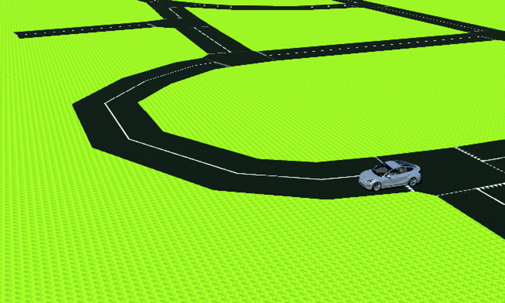
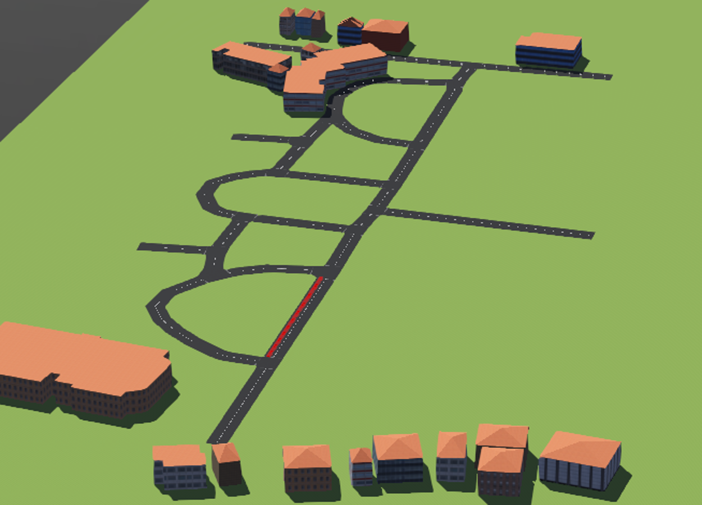

Multi Agent Patrolling
Guides: Prof. Leena Vachhani & Prof. Arpita Sinha
Project Description
Patrolling means the act of walking or traveling around an area, at regular intervals, to protect or supervise it. Given a graph, the patrolling task refers to continuously visiting all the graph nodes to minimize the time lag between two visits. We have to design an automated patrolling system with multiple agents to monitor a given environment with nodes of interest of varying priorities. A group of students is working on the simulation part of this project, given by the DRDO, India. They will do the hardware aspect of this project. This project's main objective is to prevent the innocent lives of many soldiers who are at the borders working at their top edge and died while patrolling manually. So, instead of them, an autonomous car will do this task and keep a keen observation on the movement of enemies.
My contributions till date
- Applied Conscientious Reactive architecture with emergent coordination startegy for reducing idleness using TraCi library in a realisitc traffic simulator - Simulation of Urban MObility (SUMO)
- Got the expected results for the symmetrical maps, i.e. all nodes are equidistant, of minimizing the idleness in a long run
- Formulated an path planning algorithm which will allow smooth movement on any curved road and the junctions
- Verified the results of the algorithm by creating an interface between Webots & ROS, and implemented it on the CAIR map
- Incorporated static & dynamic obstacle avoidance in the algorithm
Future work
- Design the patrolling algorithm using Deep Q Network Reinforcement learning technique with GBLA architecture
- Incorporate the effect of priority nodes in the map while maneuvering
- Improve the results of Conscientious Reactive in case of larger number of cars in assymetrical grids.

